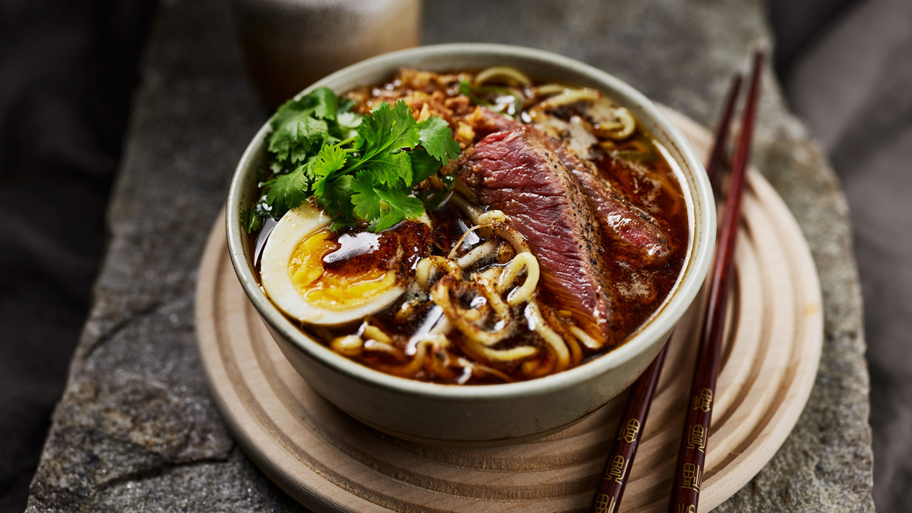

Beef Ramen
45 min
Beef ramen er en fantastisk asiatisk suppe med nudler og oksekød. Ramen består af en kraftig bouillon med smagsgivere som fx miso og soja, nudler og toppings. Suppen er her lavet på oksebouillon, frisk ingefær og miso - og toppings består af nudler, stegte svampe, bønnespirer, flanksteak og frisk koriander.
Ingredienser
Ramen
- 20 g smør
- 200 g Champigoner
- Forårsløg
- 4 fintsnittede fed hvidløg
- 1½ liter oksebouillon
- 2 spsk fint revet frisk ingefær
- 2 spsk sojasauce
- 2 spsk sesamolie
- 1 spsk mørk miso
- 1 spsk rørsukker
- 1 tsk tørrede chiliflager
Flankesteak
- 20 g smør
- 400 g flanksteak
- 1 tsk salt
- Friskkværnet peber
Topping
- 200 g tørrede ægnudler
- 2 dl bønnespirer
- 2 blødkogte æg
- 4 spsk ristede løg
- Frisk koriander
Sådan gør du
Ramen
- Lad smørret blive gyldent i en stor gryde. Steg champignon ved jævn varme i ca. 2 min. - rør af og til.
- Skær forårsløgene i tynde ringe. Steg den hvide del af forårsløgene og hvidløg sammen med champignon i ca. 1 min. - gem den grønne del til pynt.
- Tilsæt de øvrige ingredienser og giv det et opkog.
Flankesteak
- Lad smøret blive gyldent i en pande. Steg steaken ca. 4 min. på hver side og drys med salt og peber.
- Lad den hvile i ca. 5 min. og skær den i skiver.
Topping og anretning
- Tilbered imens ægnudlerne efter anvisning på emballagen. Lad dem dryppe af i en sigte.
- Halver de blødkogte æg og anret dem sammen ægnudler, bønnespirer, ristede løg, koriander og de grønne foråsrløgtoppe i fire skåle.
- Fordel kødskiverne over fyldet g hæld den kogende suppe over. Server straks.
Næringsindhold
Energiindhold for hele retten:9619 kJ / 2299 kcal
Næringsindhold pr. 100g357 kJ / 85 kcal
NÆRINGSINDHOLD PR. 100G
Fiber:
0.4 g
Protein:
5.1 g
Kylhydrat:
7.1 g
Fedt:
4 g